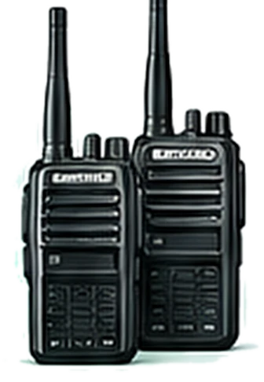
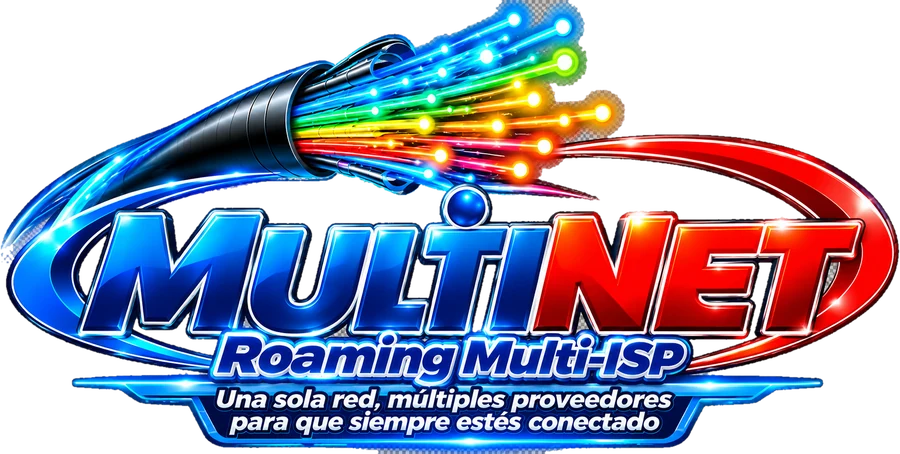

Fibra óptica
Conexión por cable de fibra hasta tu domicilio: estable y poco sensible al clima o a interferencias.

Conectividad para tu casa, entretenimiento para tu familia y comunicación para tu rancho o potrero.
Elige la combinación que necesitas para tu hogar, tu familia y tu trabajo en el campo.
Conexión por cable de fibra hasta tu domicilio: estable y poco sensible al clima o a interferencias.
Señal inalámbrica desde nuestra red hasta una antena en tu casa, para localidades a las que aún no llega la fibra.
Televisión por Internet incluida en los planes Lite y Plus, y por $40 adicionales en el Plan Básico.
Ver detallesRadios VHF frecuenciados para comunicarte en tu rancho o potrero. Exclusivo para clientes con contrato activo.
Ver paquetesSi tu plan es de 80 Mbps, descargas a 80 Mbps y también subes a 80 Mbps. Es ideal para videollamadas, subir archivos, transmisiones en vivo y juegos en línea.
La tecnología disponible depende de la ubicación de cada domicilio. Antes de contratar revisamos qué opción es viable en tu zona.

La fibra óptica transmite datos mediante luz a través de un cable de vidrio: una conexión estable y poco sensible al clima o a interferencias.

El radioenlace lleva la señal de forma inalámbrica desde una antena de la red hasta una antena instalada en tu domicilio.
El servicio de IPTV de HerzSA.Net se ve con la aplicación HerzSA TV: TV en vivo, películas y series. Inicia sesión con el usuario y la contraseña que te proporcionamos con tu servicio.

$40
adicionales
El servicio de IPTV se agrega al plan por un costo adicional.
IPTV
incluido
La conexión IPTV ya está incluida en tu plan.
IPTV
incluido
El servicio de IPTV ya está incluido en tu plan.
Solo en nuestra red: HerzSA TV solo puede usarse conectado a la red de HerzSA.Net o a una red aliada MultiNet (puntos MULTINET_); no funciona con datos móviles ni con Internet de otro proveedor.
Paquetes de radios Baofeng UV82 con frecuencia VHF preconfigurada, para clientes con contrato de Internet activo.

Paquete A: 2 radios. Paquete B: 3 radios. Paquete C: tu propio radio.
Ventas restringidas a clientes activos con contrato de Internet vigente. Consulta el precio de los equipos con nuestro equipo.

Una sola red, múltiples proveedores. Con tu Usuario Plus navegas en cualquier punto MULTINET_ de las redes aliadas.
Conocer MultiNetLa aplicación de IPTV de HerzSA.Net para Android, Windows, Roku y Samsung: TV en vivo, películas y series para clientes elegibles.
En proceso de publicación · aún no disponible en la tienda de canales de Roku
Conocer HerzSA TV